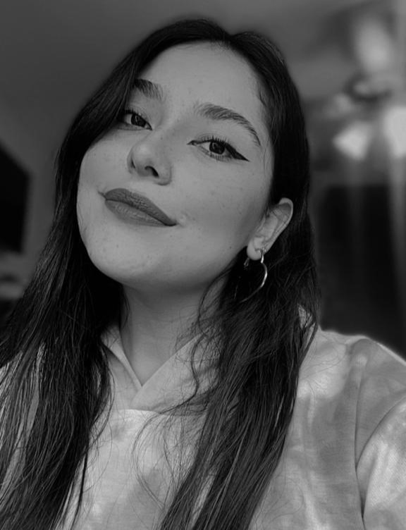

Frida Noemi Rojas Meza
Soy Frida Noemi Rojas Meza, tengo 21 años y actualmente estudio el 7mo. semestre de la carrera de Diseño Gráfico en la Benemérita Universidad Autónoma de Puebla.
Entusiasta por mi carrera, me considero una persona responsable y con ganas de trabajar en equipo comprometida con interactuar y aprender de diferentes puntos de vista.
Con trabajos y proyectos universitarios, mi pasión es y siempre será satisfcer las necesidades de mis clientes.
Para mi es primordial una experiencia grata cumpliendo todos mis objetivos.